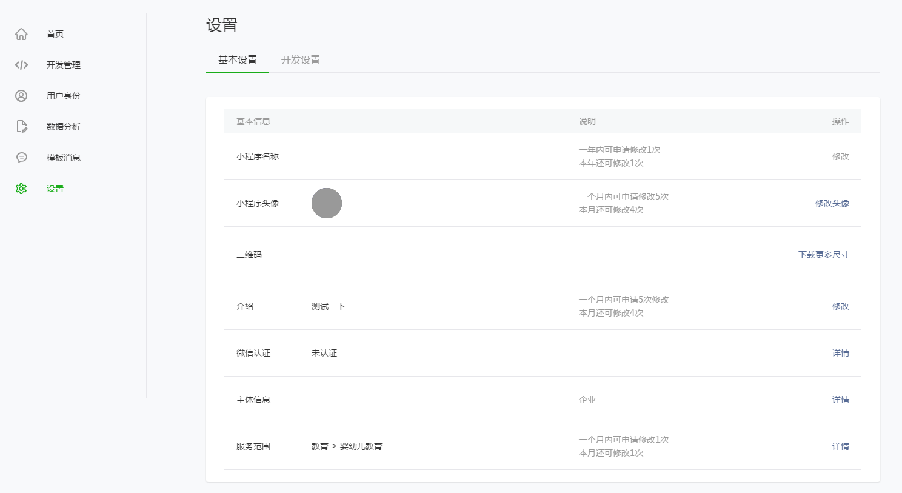
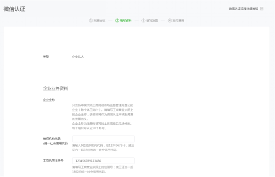

<html lang=""><head>
    <title>微信认证指引 · MINA</title>
    <meta charset="UTF-8">
    <meta http-equiv="X-UA-Compatible" content="IE=edge">
    <meta content="text/html; charset=utf-8" http-equiv="Content-Type">
    <meta name="description" content="">
    <meta name="generator" content="GitBook 3.2.0">


    <link rel="stylesheet" href="../gitbook/style.css">


    <link rel="stylesheet" href="../gitbook/gitbook-plugin-highlight/website.css">


    <link rel="stylesheet" href="../gitbook/gitbook-plugin-search/search.css">


    <meta name="HandheldFriendly" content="true">
    <meta name="viewport" content="width=device-width, initial-scale=1, user-scalable=no">
    <meta name="apple-mobile-web-app-capable" content="yes">
    <meta name="apple-mobile-web-app-status-bar-style" content="black">
    <link rel="apple-touch-icon-precomposed" sizes="152x152" href="../gitbook/images/apple-touch-icon-precomposed-152.png">
    <link rel="shortcut icon" href="../gitbook/images/favicon.ico" type="image/x-icon">


    <link rel="next" href="material.html">


    <link rel="prev" href="service.html">


</head>
<body>

<div class="book with-summary">
    <div>

        <div class="sub_nav_box">
            <div class="sub_nav_inner">


                <ul class="top_sub_nav">


                    <li class="sub_nav_item " data-level="1.1" data-path="./">

                        <a href="./">


                            运营规范

                        </a>

                    </li>

                    <li class="sub_nav_item " data-level="1.2" data-path="reject.html">

                        <a href="reject.html">


                            常见拒绝情形

                        </a>

                    </li>

                    <li class="sub_nav_item " data-level="1.3" data-path="service.html">

                        <a href="service.html">


                            服务条款

                        </a>

                    </li>

                    <li class="sub_nav_item selected" data-level="1.4" data-path="renzheng.html">

                        <a href="renzheng.html">


                            微信认证指引

                        </a>

                    </li>

                    <li class="sub_nav_item " data-level="1.5" data-path="material.html">

                        <a href="material.html">


                            特殊行业所需资质材料

                        </a>

                    </li>


                </ul>


                <!-- <h1>微信认证指引</h1> -->
                <div id="book-search-input" role="search">
                    <form>
                        <label for="search-input" class="search-icon" id="js-search-icon"></label>
                        <input type="text" id="search-input" name="search-input" placeholder="搜索">
                        <button type="reset" class="clear-input-btn"></button>
                    </form>
                </div>
            </div>
        </div>

        <div class="book-summary">


            <nav role="navigation">


                <ul class="summary">


                    <li class="chapter  " data-level="1.4.1" data-path="renzheng.html">

                        <a href="renzheng.html#一、申请微信认证入口">


                            一、申请微信认证入口

                        </a>


                    </li>

                    <li class="chapter  " data-level="1.4.2" data-path="renzheng.html">

                        <a href="renzheng.html#二、申请微信认证操作流程">


                            二、申请微信认证操作流程

                        </a>


                    </li>

                    <li class="chapter  " data-level="1.4.3" data-path="renzheng.html">

                        <a href="renzheng.html#三、公众帐号的认证结果说明">


                            三、公众帐号的认证结果说明

                        </a>


                    </li>

                    <li class="chapter  " data-level="1.4.4" data-path="renzheng.html">

                        <a href="renzheng.html#四、支持的认证主体类型">


                            四、支持的认证主体类型

                        </a>


                    </li>

                    <li class="chapter  " data-level="1.4.5" data-path="renzheng.html">

                        <a href="renzheng.html#五、各类型认证主体需要提交的资质材料">


                            五、各类型认证主体需要提交的资质材料

                        </a>


                    </li>

                    <li class="chapter  " data-level="1.4.6" data-path="renzheng.html">

                        <a href="renzheng.html#六、填写企业开户银行（对公帐户）用来做什么？">


                            六、填写企业开户银行（对公帐户）用来做什么？

                        </a>


                    </li>

                    <li class="chapter  " data-level="1.4.7" data-path="renzheng.html">

                        <a href="renzheng.html#七、管理员身份证件的类型有哪些？">


                            七、管理员身份证件的类型有哪些？

                        </a>


                    </li>

                    <li class="chapter  " data-level="1.4.8" data-path="renzheng.html">

                        <a href="renzheng.html#八、认证服务资费">


                            八、认证服务资费

                        </a>


                    </li>

                    <li class="chapter  " data-level="1.4.9" data-path="renzheng.html">

                        <a href="renzheng.html#九、认证服务资费支付方式">


                            九、认证服务资费支付方式

                        </a>


                    </li>

                    <li class="chapter  " data-level="1.4.10" data-path="renzheng.html">

                        <a href="renzheng.html#十、认证状态和结果查看方式">


                            十、认证状态和结果查看方式

                        </a>


                    </li>

                    <li class="chapter  " data-level="1.4.11" data-path="renzheng.html">

                        <a href="renzheng.html#十一、怎样开具发票">


                            十一、怎样开具发票

                        </a>


                    </li>

                    <li class="chapter  " data-level="1.4.12" data-path="renzheng.html">

                        <a href="renzheng.html#十二、认证通过需要多长时间">


                            十二、认证通过需要多长时间

                        </a>


                    </li>

                    <li class="chapter  " data-level="1.4.13" data-path="renzheng.html">

                        <a href="renzheng.html#十三、认证失败有哪些原因？">


                            十三、认证失败有哪些原因？

                        </a>


                    </li>

                    <li class="chapter  " data-level="1.4.14" data-path="renzheng.html">

                        <a href="renzheng.html#十四、同一个主体可以认证几个小程序？">


                            十四、同一个主体可以认证几个小程序？

                        </a>


                    </li>

                    <li class="chapter  " data-level="1.4.15" data-path="renzheng.html">

                        <a href="renzheng.html#十五、第三方审核公司咨询热线">


                            十五、第三方审核公司咨询热线

                        </a>


                    </li>

                    <li class="chapter  " data-level="1.4.16" data-path="renzheng.html">

                        <a href="renzheng.html#十六、如何修改认证资料？">


                            十六、如何修改认证资料？

                        </a>


                    </li>

                    <li class="chapter  " data-level="1.4.17" data-path="renzheng.html">

                        <a href="renzheng.html#十七、认证年审">


                            十七、认证年审

                        </a>


                    </li>

                    <li class="chapter  " data-level="1.4.18" data-path="renzheng.html">

                        <a href="renzheng.html#十八、认证时能否更换认证主体（认证申请机构）？">


                            十八、认证时能否更换认证主体（认证申请机构）？

                        </a>


                    </li>


                </ul>


            </nav>


        </div>

        <div class="book-body">

            <div class="body-inner">

                <!--                     
                
                <div class="book-header" role="navigation">
                    
                </div>
                
                
                 -->

                <div class="page-wrapper" tabindex="-1" role="main">
                    <div class="page-inner">

                        <div id="book-search-results">
                            <div class="search-noresults">

                                <section class="normal markdown-section">

                                    <div class="top-header">微信小程序认证指引</div>


                                    <h2 id="一、申请微信认证入口">一、申请微信认证入口</h2><p>入口一：“设置-&gt;基本信息-&gt;微信认证”点击“详情”进入。</p><p></p><p>入口二：小程序发布流程页（政府、媒体、其他组织类帐号）</p><p></p><h2 id="二、申请微信认证操作流程">二、申请微信认证操作流程</h2><ol><li>签署《微信公众平台认证服务协议》，勾选同意，点击下一步。
                                </li></ol>
                                    <p></p><ol><li>填写资料：选择认证主体类型，提交相应的认证材料。
                                </li></ol>
                                    <p></p><p>选择完类型后进入填写认证资料页面，各类型需要提交的资质材料包括但不限于：</p><p>· 企业法人：
                                    《组织机构代码证》；《企业工商营业执照》；</p><p>· 媒体：
                                    《组织机构代码证》；《企业工商营业执照》或《事业单位法人证书》；广播电视应上传《广播电视播出机构许可证》或《广播电视频道许可证》 ；报纸需上传《中华人民共和国报纸出版许可证》；期刊杂志需有《中华人民共和国期刊出版许可证》；网络媒体需要提供《互联网新闻信息服务许可证》或《信息网络传播视听节目许可证》。</p><p>· 政府及事业单位：
                                    《组织机构代码证》。</p><p>· 其他组织-免费(基金会,外国政府机构驻华办事处)：
                                    《组织机构代码证》；相关登记证书、批文或证明等：基金会请上传《基金会法人登记证书》，外地常设机构请上传其驻在地政府主管部门的批文，外国驻华机构请上传国家有关主管部门的批文或证明。</p><p>· 社会团体：
                                    《组织机构代码证》；《社会团体登记证证书》；如果是宗教团体还需要提供宗教事务管理部门的批文或证明。</p><p>· 民办非企业：
                                    《组织机构代码证》；《民办非企业登记证书》；非事业单位的培训教育机构，需要提交其自身所有权的《办学许可证》。非事业单位的医疗机构包括美容，需要提交其自身所有权的《医疗机构执业许可证》等。</p><p>· 其他组织：
                                    《组织机构代码证》；相关登记证书、批文或证明等。</p><ol><li><p>填写发票信息。</p><p>用户可选择开具普通发票（定额发票）、增值税专用发票。其中增值税专用发票还需提交《税务登记证》（办理三证合一的企业直接上传新的营业执照）、《银行开户证明》，审核公司会对资质进行审核。资质审核通过后由腾讯公司开具并寄送发票。</p><p></p><p>​</p><p>​</p></li>
                                    <li><p>支付审核费用，目前仅支持微信支付。</p><p>微信支付过程如下：</p><p></p><p>​</p></li>
                                    <li><p>支付完成后，进入认证审核。页面上会公布第三方审核公司的联系方式，在审核过程中该公司将有可能与你联系沟通，如果在审核过程中遇到问题，可以拨打该公司的热线电话进行咨询。</p></li></ol>
                                    <h2 id="三、公众帐号的认证结果说明">三、公众帐号的认证结果说明</h2><p>​    腾讯及其委托的第三方审核机构按照用户的申请进行认证审核后，腾讯向用户输出的认证结果，认证结果分为成功和失败两种情形。</p><p>​    帐号类型为政府、媒体、其他组织的微信应用号，需认证成功后方可提交发布审核，否则，将不能提交发布审核，该微信应用号将无法发布；帐号类型为企业的微信应用号，完成注册后即可取得大部分的初始化开发管理能力，认证成功不作为提交发布审核的前提，但支付功能等腾讯有特别规定的除外。</p><h2 id="四、支持的认证主体类型">四、支持的认证主体类型</h2><p>支持以下几种认证主体：</p><p>· 企业（企业法人、非企业法人、外资企业驻华代表处）;</p><p>· 媒体（事业单位媒体、其他媒体）;</p><p>· 政府及事业单位;</p><p>· 其他组织</p><h2 id="五、各类型认证主体需要提交的资质材料">五、各类型认证主体需要提交的资质材料</h2><p>包括但不限于以下材料：</p><p><strong>企业法人：</strong></p><p>《组织机构代码证》；《企业工商营业执照》；</p><p><strong>媒体：</strong></p><p>《组织机构代码证》；《企业工商营业执照副本》或《事业单位法人证书》；广播电视应上传《广播电视播出机构许可证》或《广播电视频道许可证》 ；报纸需上传《中华人民共和国报纸出版许可证》；期刊杂志需有《中华人民共和国期刊出版许可证》；网络媒体需要提供《互联网新闻信息服务许可证》或《信息网络传播视听节目许可证》。</p><p><strong>政府及事业单位：</strong></p><p>《组织机构代码证》</p><p><strong>其他组织-免费：</strong></p><p>《组织机构代码证》；相关登记证书、批文或证明等：基金会请上传《基金会法人登记证书》，外地常设机构请上传其驻在地政府主管部门的批文，外国驻华机构请上传国家有关主管部门的批文或证明，居民委员会、村民委员会、社区委员会等其他组织请上传主管部门的批文或证明，独立核算的附属机构请上传主管部门的基本存款账户开户许可证和批文。**</p><p><strong>社会团体：</strong></p><p>《组织机构代码证》；《社会团体登记证证书》；如果是宗教团体还需要提供宗教事务管理部门的批文或证明。</p><p><strong>民办非企业：</strong></p><p>《组织机构代码证》；《民办非企业登记证书》；非事业单位的培训教育机构，需要提交其自身所有权的《办学许可证》。非事业单位的医疗机构包括美容，需要提交其自身所有权的《医疗机构执业许可证》等。</p><p><strong>其他盈利组织：</strong></p><p>《组织机构代码证》；相关登记证书、批文或证明等。</p><h2 id="六、填写企业开户银行（对公帐户）用来做什么？">六、填写企业开户银行（对公帐户）用来做什么？</h2><p>​    在认证过程中，为了验证认证主体（企业、媒体）的真实性，第三方审核机构会向申请者填写的对公账户进行小额打款，并在打款时附上备注信息，申请者在收到打款后，将收款的回执证明及时通过微信公众平台认证的补充材料页面提交审核（第三方审核机构会在电话沟通过程中指导您如何提交）。</p><p>​    企业收到的打款金额只用于认证审核，无需返还给第三方审核机构或微信。</p><h2 id="七、管理员身份证件的类型有哪些？">七、管理员身份证件的类型有哪些？</h2><p>1) 中华人民共和国居民身份证。</p><p>2) 无居民身份证内地居民：可以提交《临时居民身份证》。</p><p>以上证件必须提供正反面照片。</p><h2 id="八、认证服务资费">八、认证服务资费</h2><p>​    除政府、部分组织（基金会、外国政府机构驻华办事处）可免费申请外，其他类型申请微信认证均需支付300元/次的审核服务费用。这是用户基于腾讯提供的资质审核服务而支付的一次性费用，用户每申请一次认证服务需要支付一次审核服务费。无论认证成功或失败，都需要支付审核服务费。</p><h2 id="九、认证服务资费支付方式">九、认证服务资费支付方式</h2><p>支付审核费用，目前仅支持微信支付。</p><h2 id="十、认证状态和结果查看方式">十、认证状态和结果查看方式</h2><p>登录公众平台，从“设置-&gt;微信认证-&gt;查看“查看进度。
                                    也可以拨打第三方审核公司的客服热线咨询审核进度。</p><h2 id="十一、怎样开具发票">十一、怎样开具发票</h2><p>在申请认证的第4步可选择发票类型，以及填写发票寄送地址。注意事项如下：</p><p>1） 发票资料提交后不能修改，请填写正确的发票类型和寄送地址，若填写错误造成发票开具错误、寄送错误或选择不开具发票，后续将无法重新开具并寄送发票。</p><p>2） 普通发票为定额发票，增值税专用发票的抬头为认证申请机构的全称。</p><p>3） 增值税专用发票的开票资质需要进行审核，审核结果将在7个工作日内（不包括周末、法定节假日）在通知中心发送审核结果。</p><p>4） 订单完成后（包括认证成功和失败），腾讯会在45天内开具并寄出普通发票，80天内开具并寄出增值税专用发票。</p><h2 id="十二、认证通过需要多长时间">十二、认证通过需要多长时间</h2><p>​    认证通过取决于用户提交（补交）材料是否完整、及时，腾讯会在15个工作日内展开资质审核工作，用户应积极配合腾讯及第三方审核公司的审核需求。</p><h2 id="十三、认证失败有哪些原因？">十三、认证失败有哪些原因？</h2><p>1） 企业没有在工商局合法注册。</p><p>2） 运营者未得到企业授权申请和运营公众账号。</p><p>3） 运营者身份证信息错误。</p><p>4） 申请认证资料重填三次都不符合规范。</p><p>5） 认证超时。自首次打回要求重填认证资料开始计算，30天（自然日）内没有再次提交认证资料的情况属于认证超时，将做认证失败处理。</p><h2 id="十四、同一个主体可以认证几个小程序？">十四、同一个主体可以认证几个小程序？</h2><p>​    一个主体目前可认证50个小程序。</p><h2 id="十五、第三方审核公司咨询热线">十五、第三方审核公司咨询热线</h2><p>1） 上海倍通企业信用征信有限公司</p><p>​    咨询电话：021-33977660</p><p>​    咨询时间：周一至周五（工作日）8：30-17：30</p><p>2） 北京知道创宇信息技术有限公司</p><p>​    咨询电话：028-85182726</p><p>​    邮箱：wx@anquan.org</p><p>​    客服公众号ID：wxrzkf</p><p>​    咨询时间：周一至周五（工作日）9：30-18：00</p><p>3） 长沙公信诚丰信息技术服务有限公司</p><p>​    咨询电话：0731-88845400</p><p>​    咨询时间：周一至周五（工作日）8：30-17：30</p><p>4） 莱茵技术监督服务（广东）有限公司</p><p>​    咨询电话：020-62334422</p><p>​    咨询时间：周一至周五（工作日）9：00-18：00</p><p></p><h2 id="十六、如何修改认证资料？">十六、如何修改认证资料？</h2><p>​    在年审之前，暂不允许修改认证资料。</p><h2 id="十七、认证年审">十七、认证年审</h2><p>​    用户帐号审核成功后帐号审核成功状态将会被保留一年（起算日为帐号审核成功日）。用户如需持续保留帐号审核成功状态，保持高级功能的申请、使用权利，则应自帐号审核成功之日起一年内发起并完成年审认证，年审认证流程及帐号审核标准与原认证一致。如用户未能及时完成年审认证并取得认证成功结果，其帐号审核成功状态终止，高级功能的申请、使用权将被取消。</p><h2 id="十八、认证时能否更换认证主体（认证申请机构）？">十八、认证时能否更换认证主体（认证申请机构）？</h2><p>​    不能在认证时变更认证主体，如果企业变更了企业名称，可在认证申请时提供相应的工商变更证明，由审核公司审核确认是否准予修改主体名称。</p><p><span class="signature">微信团队</span></p>

                                </section>

                            </div>
                            <div class="search-results">
                                <div class="has-results">

                                    <h1 class="search-results-title"><span class="search-results-count"></span> 个结果 "<span class="search-query"></span>"</h1>
                                    <ul class="search-results-list"></ul>

                                </div>
                                <div class="no-results">

                                    <h1 class="search-results-title">没有找到相关内容 "<span class="search-query"></span>"</h1>

                                </div>
                            </div>
                        </div>

                    </div>
                </div>
                <div class="foot" id="footer">
                    <ul class="links ft">
                        <li class="links_item"><a href="">关于腾讯</a></li>
                        <li class="links_item"><a href="">服务协议</a></li>
                        <li class="links_item"><a href="">运营规范</a></li>
                        <li class="links_item"><a href="">辟谣中心</a></li>
                        <li class="links_item"><a href="">客服中心</a></li>
                        <li class="links_item"><a href="">联系邮箱</a></li>
                        <li class="links_item"><a href="">侵权投诉</a></li>
                        <li class="links_item">
                            <p class="copyright">Copyright © 2012-<span id="s_copyright_year"></span> Tencent. All Rights Reserved.</p>
                        </li>
                    </ul>
                </div>

            </div>


            <a href="service.html#七、【其它】" class="navigation navigation-prev " aria-label="Previous page: 七、其他">
                <i class="fa fa-angle-left"></i>
            </a>


            <a href="material.html" class="navigation navigation-next " aria-label="Next page: 特殊行业所需资质材料">
                <i class="fa fa-angle-right"></i>
            </a>


        </div>
    </div>


    <script src="../gitbook/gitbook.js"></script>
    <script src="../gitbook/theme.js"></script>


    <script src="../gitbook/gitbook-plugin-search/search-engine.js"></script>


    <script src="../gitbook/gitbook-plugin-search/search.js"></script>


    <script src="../gitbook/gitbook-plugin-lunr/lunr.min.js"></script>


    <script src="../gitbook/gitbook-plugin-lunr/search-lunr.js"></script>


    <script>
        var gitbook = gitbook || [];
        gitbook.push(function() {
            gitbook.page.hasChanged({"page":{"title":"微信认证指引","level":"1.4","depth":1,"next":{"title":"特殊行业所需资质材料","level":"1.5","depth":1,"path":"material.md","ref":"material.md","articles":[{"title":"特殊行业所需资质材料","level":"1.5.1","depth":2,"path":"material.md","ref":"material.md","articles":[]}]},"previous":{"title":"七、其他","level":"1.3.7","depth":2,"anchor":"#七、【其它】","path":"service.md","ref":"service.md#七、【其它】","articles":[]},"dir":"ltr"},"config":{"gitbook":"*","theme":"default","variables":{},"plugins":[],"pluginsConfig":{"highlight":{},"search":{},"lunr":{"ignoreSpecialCharacters":false,"maxIndexSize":1000000},"theme-default":{"showLevel":false,"styles":{"ebook":"styles/ebook.css","epub":"styles/epub.css","mobi":"styles/mobi.css","pdf":"styles/pdf.css","print":"styles/print.css","website":"styles/website.css"}}},"structure":{"langs":"LANGS.md","readme":"README.md","glossary":"GLOSSARY.md","summary":"SUMMARY.md"},"pdf":{"pageNumbers":true,"fontSize":12,"fontFamily":"Arial","paperSize":"a4","chapterMark":"pagebreak","pageBreaksBefore":"/","margin":{"right":62,"left":62,"top":56,"bottom":56}},"styles":{"ebook":"styles/ebook.css","epub":"styles/epub.css","mobi":"styles/mobi.css","pdf":"styles/pdf.css","print":"styles/print.css","website":"styles/website.css"}},"file":{"path":"renzheng.md","mtime":"2016-09-21T08:08:55.000Z","type":"markdown"},"gitbook":{"version":"3.2.0","time":"2016-09-21T08:09:15.038Z"},"basePath":".","book":{"language":""}});
        });
    </script>


</div></body></html>